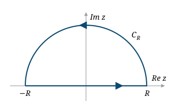
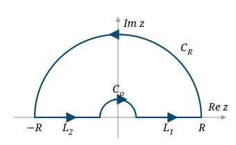

9. Real integrals by residues
Problem 9.1. By applying the Residue theorem, evaluate the definite integral
\[ \int_0^{2\pi} \frac{4}{5-\cos t} \; dt, \]and sketch the contour you use.
Solution
Take the contour as the unit circle $C:|z|=1$ of the following integral
\[\int_C \frac{4}{iz(5-\frac12(z+z^{-1})) }\; dz= 2\pi i \Res_{z=5-\sqrt{24}} \frac{8i}{(z-5+\sqrt{24})(z-5-\sqrt{24})}=2 \sqrt{\frac23}\pi\]On the other hand, if you do the integral using the parametrization $z= e^{it}, t\in (0,2\pi)$ then $dz = ie^{it} dt$ thus,
\[\int_C \frac{4}{iz(5-\frac12(z+z^{-1})) }\; dz= \int_0^{2\pi} \frac{4}{ie^{it}(5-\frac12(e^{it}+e^{-it}))} \; ie^{it}\; dt = \int_0^{2\pi} \frac{4}{5-\cos t}\; dt\]Problem 9.2. Suppose that $\alpha$ is a complex number such that $|\alpha|\ne 1$. By applying the Residue theorem, evaluate the integral
\begin{align*} \int_0^{2\pi}\dfrac{d\theta}{1-2\alpha \cos\theta+\alpha^2}. \end{align*}Sketch the contour you use, and give explicit estimates for any integrals you claim tend to zero if there are any.
Solution
Put $z=e^{i\theta},$ we have $dz=ie^{i\theta}d\theta$ and $\cos \theta= \dfrac{e^{i\theta}+e^{-i\theta}}{2}=\dfrac{z+z^{-1}}{2}.$ Thus we have
\begin{align*} I= \int_0^{2\pi}\dfrac{d\theta}{1-2\alpha \cos\theta+\alpha^2}&=\int_{|z|=1}\dfrac{dz}{iz(1-\alpha(z+z^{-1})+\alpha^2)}\\ &=\int_{|z|=1}\dfrac{-i dz}{(1+\alpha^2) z-\alpha(z^2+1)}\\ &=\int_{|z|=1}\dfrac{i dz}{\alpha z^2-(1+\alpha^2)z+\alpha}\\ &=\int_{|z|=1}\dfrac{i dz}{\alpha(z-\alpha)(z-1/\alpha)}\\ \end{align*}Define $f(z)=\dfrac{i}{\alpha(z-\alpha)(z-1/\alpha)}$. We consider two cases.
Case 1. $|\alpha|<1,$ then the residue theorem gives
\begin{align*} I=2\pi i{\rm Res}_{z=\alpha}f(z)=2\pi i\dfrac{i}{\alpha(\alpha-1/\alpha)}=\dfrac{2\pi}{1-\alpha^2}. \end{align*}Case 2. $|\alpha|>1,$ then the residue theorem gives
\begin{align*} I=2\pi i{\rm Res}_{z=1/\alpha}f(z)=2\pi i\dfrac{i}{\alpha(1/\alpha-\alpha)}=\dfrac{2\pi}{\alpha^2-1}. \end{align*}
Problem 9.3. Evaluate the integral
\begin{align*} \int_0^{2\pi}\dfrac{d\theta}{1+r\sin\theta} \end{align*}for $0<r<1.$
Solution
Put $z=e^{i\theta}$, then $\sin\theta=\dfrac{z-z^{-1}}{2i}$. Thus we have
\begin{align*} \int_0^{2\pi}\dfrac{d\theta}{1+r\sin\theta}&=\int_{|z|=1}\dfrac{dz}{iz(1+r\dfrac{z-z^{-1}}{2i})}\\ &=\int_{|z|=1}\dfrac{2dz}{2iz(1+r\dfrac{z-z^{-1}}{2i})}\\ &=\int_{|z|=1}\dfrac{2dz}{2iz+rz^2-r}\\ &=\int_{|z|=1}\dfrac{2dz}{r(z-z_1)(z-z_2)} \end{align*}where
\begin{align*} z_1=\dfrac{-i+i\sqrt{1-r^2}}{r},z_2=\dfrac{-i-i\sqrt{1-r^2}}{r}. \end{align*}Then we have $|z_1|<1$ and $|z_2|>1.$ Then by Residue theorem, we have
\begin{align*} \int_{|z|=1}\dfrac{2dz}{r(z-z_1)(z-z_2)}=2\pi i{\rm Res}_{z=z_1}f(z), \end{align*}where
\begin{align*} f(z)=\dfrac{2}{r(z-z_1)(z-z_2)}. \end{align*}Thus,
\begin{align*} \int_{|z|=1}\dfrac{2dz}{r(z-z_1)(z-z_2)}=2\pi i\dfrac{2}{r(z_1-z_2)}=\dfrac{4\pi i}{r\cdot \dfrac{2i\sqrt{1-r^2}}{r}}=\dfrac{2\pi}{ {\sqrt{1-r^2}}}. \end{align*}Thus
\begin{align*} \int_0^{2\pi}\dfrac{d\theta}{1+r\sin\theta}=\dfrac{2\pi}{\sqrt{1-r^2}}. \end{align*}Problem 9.4. Evaluate the integral
\begin{align*} \int_{-\infty}^\infty \dfrac{\cos x}{x^4 + x^2 + 1} \,dx. \end{align*}Solution
Consider the function
\begin{align*} f(z) = \dfrac{e^{iz}}{z^4+z^2+1}, z \in \C. \end{align*}Consider the contour $C := C_R + [-R,R]$ where $C_R$ is the upper half part of the positively oriented circle $|z| = R$.

On the upper half plane, $f$ has only two poles at $z_1 = \dfrac{1}{2} + \dfrac{\sqrt{3}}{2}i$ and $z_2 = -\dfrac{1}{2} + \dfrac{\sqrt{3}}{2}i$. Then by the Residue Theorem, we have
\begin{align*} \int_{C_R} f(z) \,dz + \int_{-R}^R f(z) \,dz = 2\pi i (\Res_{z = z_1} f(z) + \Res_{z = z_2} f(z)). \end{align*}We have
\begin{align*} f(z) = \dfrac{\phi_1(z)}{z - z_1}, \text{ where } \phi_1(z) = \dfrac{e^{iz}}{(z^2 + z + 1)\brac{z - \dfrac{1}{2} + \dfrac{\sqrt{3}}{2}i}}. \end{align*}Therefore,
\begin{align*} \Res_{z = z_1} f(z) = \phi_1(z_1)&=\brac{-\dfrac{1}{4}-\dfrac{\sqrt{3}}{12}i}e^{-\sqrt{3}/2}(\cos\dfrac{1}{2}+i\sin\dfrac{1}{2})\\ &=e^{-\sqrt{3}/2}\sbrac{(-\dfrac{1}{4}\cos\dfrac{1}{2}+\dfrac{\sqrt{3}}{12}\sin \dfrac{1}{2})+i(-\dfrac{\sqrt{3}}{12}\cos\dfrac{1}{2}-\dfrac{1}{4}\sin\dfrac{1}{2})}. \end{align*}Moreover,
\begin{align*} \Res_{z = z_2} f(z) =\dfrac{e^{iz_2}}{4z_2^3+2z_2}&=\brac{\dfrac{1}{4}-\dfrac{\sqrt{3}}{12}i}e^{-\sqrt{3}/2}(\cos\dfrac{1}{2}-i\sin\dfrac{1}{2})\\ &=e^{-\sqrt{3}/2}\sbrac{(\dfrac{1}{4}\cos\dfrac{1}{2}-\dfrac{\sqrt{3}}{12}\sin \dfrac{1}{2})+i(-\dfrac{\sqrt{3}}{12}\cos\dfrac{1}{2}-\dfrac{1}{4}\sin\dfrac{1}{2})}. \end{align*}Thus
\begin{align*} \Res_{z = z_1} f(z)+ \Res_{z = z_2} f(z)=ie^{-\sqrt{3}/2}(-\dfrac{\sqrt{3}}{6}\cos\dfrac{1}{2}-\dfrac{1}{2}\sin\dfrac{1}{2}) \end{align*}and hence,
\begin{align*} 2\pi i( \Res_{z = z_1} f(z)+ \Res_{z = z_2} f(z))=\pi e^{-\sqrt{3}/2}(\dfrac{\sqrt{3}}{3}\cos\dfrac{1}{2}+\sin\dfrac{1}{2}). \end{align*}On the other hand, for any $z\in C_R,$ we have
\begin{align*} \abs{z^4+z^2+1}\ge |z|^4-|z^2+1|\ge |z|^4-|z|^2-1=R^4-R^2-1. \end{align*}Therefore
\begin{align*} \abs{\Re\int_{C_R}f(z)dz}=\abs{\Re\int_{C_R}\dfrac{e^{iz}}{z^4+z^2+1} dz}\le \dfrac{1}{R^4-R^2-1}\cdot \pi R\rightarrow 0,\text{ as }R\rightarrow\infty. \end{align*}Therefore,
\begin{align*} \int_{-\infty}^\infty\dfrac{\cos x}{x^4+x^2+1}=\pi e^{-\sqrt{3}/2}(\dfrac{\sqrt{3}}{3}\cos\dfrac{1}{2}+\sin\dfrac{1}{2}). \end{align*}Problem 9.5. By applying the Residue Theorem, evaluate the following improper integral
\begin{align*} \int_{-\infty}^\infty\dfrac{\cos x}{1+x^4}dx. \end{align*}Sketch the contour you use, and give explicit estimates for any integrals you claim tend to zero.
Solution
Consider the function $f(z)=\dfrac{e^{iz}}{1+z^4}$ and the contour $C:=C_R+[-R,R],R>1.$
Thus,
\begin{align*} 2\pi i(\Res_{z=z_1}f(z)+\Res_{z=z_2}f(z))=\dfrac{1}{2}\sqrt{2}\pi e^{-1/\sqrt{2}}(\cos\dfrac{1}{\sqrt{2}}+\sin\dfrac{1}{\sqrt{2}}). \end{align*}On the other hand, for $z\in C_R$ we have $|1+z^4|\ge R^4-1$ and $|e^{iz}|=e^{-\Im z}\le 1$, so
\begin{align*} \abs{\int_{C_R}f(z)dz}\le \dfrac{\pi R}{R^4-1}\rightarrow 0,\text{ as }R\rightarrow\infty. \end{align*}Since $\int_{C_R}f(z)dz+\int_{-R}^R f(x)dx=2\pi i(\Res_{z=z_1}f(z)+\Res_{z=z_2}f(z))$ and $\Re\int_{-R}^R f(x)dx=\int_{-R}^R\dfrac{\cos x}{1+x^4}dx$, letting $R\rightarrow\infty$ gives the value. Therefore,
\begin{align*} \int_{-\infty}^\infty\dfrac{\cos x}{1+x^4}dx=\dfrac{1}{2}\sqrt{2}\pi e^{-1/\sqrt{2}}(\cos\dfrac{1}{\sqrt{2}}+\sin\dfrac{1}{\sqrt{2}}). \end{align*}Problem 9.6. Calculate the integral
\begin{align*} \int_{-\infty}^\infty \dfrac{x\sin x}{x^2+2x+2}dx \end{align*}Solution
Consider the function
\begin{align*} f(z)=\dfrac{ze^{iz}}{z^2+2z+2} \end{align*}and the contour $C:=C_R+[-R,R],$ where $R>3.$
Then $f$ has a simple pole at $z=z_0=-1+i$. We also have
\begin{align*} {\rm Res}_{z=z_0}f(z)&=\dfrac{z_0e^{iz_0}}{2z_0+2}=\dfrac{(i+1)e^{i(-1+i)}}{2}=\dfrac{(i+1)e^{-i-1}}{2}\\ &=\dfrac{(i+1)e^{-1}(\cos 1-i\sin 1)}{2}\\ &=\dfrac{(i+1)(\cos 1-i\sin 1)}{2e}\\ &=\dfrac{\cos 1+\sin 1+i(\cos 1-\sin 1)}{2e}. \end{align*}Thus
\begin{align*} 2\pi i{\rm Res}_{z=z_0}f(z)=\dfrac{\pi}{e}i(\cos 1+\sin 1)-\dfrac{\pi}{e}(\cos 1-\sin 1). \end{align*}By Residue Theorem, we have
\begin{align*} \int_{C_R}f(z)dz+\int_{-R}^Rf(z)dz=2\pi i{\rm Res}_{z=z_0}f(z)=\dfrac{\pi}{e}i(\cos 1+\sin 1)-\dfrac{\pi}{e}(\cos 1-\sin 1). \end{align*}This means
\begin{align*} \int_{-R}^R\dfrac{x\sin x}{x^2+2x+2}dx=\dfrac{\pi}{e}(\cos 1+\sin 1)-{\rm Im} \int_{C_R}f(z)dz. \end{align*}Notice that for $z\in C_R,$ we have $|z^2+2z+2|\ge |z|^2-2|z|-2=R^2-2R-2$ and thus
\begin{align*} \abs{\dfrac{z}{z^2+2z+2}}\le \dfrac{R}{R^2-2R-2}\rightarrow 0,\text{ as }R\rightarrow\infty. \end{align*}Then, by Jordan's lemma (with $a=1$),
\begin{align*} \lim_{R\rightarrow\infty}\int_{C_R}f(z)dz=\lim_{R\rightarrow\infty}\int_{C_R}\dfrac{ze^{iz}}{z^2+2z+2}dz=0, \end{align*}and hence ${\rm Im} \int_{C_R}f(z)dz\rightarrow 0$ as $R\rightarrow\infty$. Therefore,
\begin{align*} \int_{-\infty}^\infty\dfrac{x\sin x}{x^2+2x+2}dx=\dfrac{\pi}{e}(\cos 1+\sin 1). \end{align*}Problem 9.7. For constants $a,b>0$, evaluate
\begin{align*} \int_0^\infty\dfrac{x\sin(bx)}{a^2+x^2}dx \end{align*}by use of a version of the Residue Theorem. Give a simple sketch of the type of contours used in the proof of the residue theorem you use.
Solution
Consider the function
\begin{align*} f(z)=\dfrac{ze^{ibz}}{a^2+z^2} \end{align*}and the contour $C=C_R+[-R,R]$, with $R>a.$
Then $f$ has a simple pole at $z_0=ai$ and
\begin{align*} \mathop{\rm Res}_{z=z_0}f(z)=\dfrac{z_0e^{ibz_0}}{2z_0}=\dfrac{e^{ibz_0}}{2}=\dfrac{e^{ibia}}{2}=\dfrac{e^{-ab}}{2}. \end{align*}Thus
\begin{align*} 2\pi i \Res_{z=z_0}f(z)=i\pi e^{-ab}. \end{align*}The residue theorem gives
\begin{align*} \int_{C_R} f(z) \,dz + \int_{-R}^R f(z) \,dz = 2\pi i \Res_{z=z_0} f(z) = i\pi e^{-ab}. \end{align*}This means
\begin{align*} \Im \int_{C_R} f(z) \,dz + \int_{-R}^R \dfrac{x\sin(bx)}{a^2 + x^2} \,dx = \pi e^{-ab}. \end{align*}For $z \in C_R$, we have $|a^2 + z^2|\ge |z|^2 - a^2 = R^2 - a^2$, and thus
\begin{align*} \abs{\dfrac{z}{a^2 + z^2}} \le \dfrac{R}{R^2 - a^2} \to 0, \text{ as } R \to \infty. \end{align*}Then, by Jordan's lemma (with $b>0$ in the exponent),
\begin{align*} \lim_{R \to \infty} \int_{C_R} \dfrac{z}{a^2 + z^2} e^{ibz} \,dz = 0 \end{align*}and thus
\begin{align*} \lim_{R \to \infty} \Im \int_{C_R} f(z) \,dz = 0. \end{align*}Notice further that $\dfrac{x\sin(bx)}{a^2+x^2}$ is an even function, we have
\begin{align*} {\rm Im} \int_{C_R}f(z)dz+2\int_{0}^R\dfrac{x\sin(bx)}{a^2+x^2} dx=\pi e^{-ab}. \end{align*}Then passing to the limit $R \to \infty$ gives
\begin{align*} \int_0^\infty\dfrac{x\sin(bx)}{a^2+x^2}dx=\dfrac{\pi e^{-ab}}{2}. \end{align*}Problem 9.8. By applying Residue Theorem, evaluate the following improper integral
\begin{align*} \int_0^\infty \dfrac{x\sin x}{x^2+1}dx. \end{align*}Sketch the contour you use, and give explicit estimates for any integrals you claim tend to zero.
Solution
Consider the function
\begin{align*} f(z)=\dfrac{ze^{iz}}{z^2+1}. \end{align*}Then we have
\begin{align*} \int_0^\infty \dfrac{x\sin x}{x^2+1}dx={\rm Im}\brac{\dfrac{1}{2}2\pi i\mathop{\rm Res}_{z=i}f(z)}={\rm Im}(\pi i.\dfrac{e^{-1}}{2})=\dfrac{\pi e^{-1}}{2}. \end{align*}Here the factor $\frac{1}{2}$ comes from the evenness of the integrand, and the integral over the upper half-circle $C_R$ tends to $0$ by Jordan's lemma, exactly as in Problem 9.7 (the case $a=b=1$).
Problem 9.9.
- (a) State a version of the Residue Theorem.
- (b)
By applying the Residue Theorem, evaluate the following improper integral
\[ \int_0^\infty \frac{\sin x}{x} \,dx. \]Sketch the contour you use, and give explicit estimates for any integrals you claim tend to zero.
Hint: Consider the principal value of the improper integral
\[ \int_{-\infty}^\infty \frac{e^{ix}}{x} \,dx \]
Solution
- (a)
Let $C$ be a simple, closed, positive oriented contour, $f$ be analytic on and inside $C$ except finitely points $z_0,\ldots,z_n$. Then
\begin{align*} \int_Cf(z)dz=2\pi i\sum_{k=0}^n\mathop{\rm Res}_{z=z_k}f(z). \end{align*} - (b)
Consider the function $f(z)=\dfrac{e^{iz}}{z}$ and the contour $C:=L_1+C_R+L_2+C_\rho,$ where $0<\rho< R.$
\begin{align*} \int_{L_1}f(z)dz+\int_{C_R}f(z)dz+\int_{L_2}f(z)dz+\int_{C_\rho}f(z)dz=0. \end{align*}
This means that
\begin{align*} \int_{L_1}f(z)dz-\int_{-L_2}f(z)dz=-\int_{C_R}f(z)dz-\int_{C_\rho}f(z)dz. \end{align*}Note that $L_1$ and $-L_2$ have parametric representations
\begin{align*} L_1:&\quad z=re^{i0}=r\quad (\rho \le r\le R)\\ -L_2:&\quad z=re^{i\pi}=-r\quad (\rho \le r\le R). \end{align*}Then we have
\begin{align*} \int_\rho^R\dfrac{e^{ir}}{r}dr-\int_{\rho}^R\dfrac{e^{-ir}}{r}dr=-\int_{C_R}f(z)dz-\int_{C_\rho}f(z)dz. \end{align*}This means that
\begin{align*} \int_\rho^R\dfrac{2i\sin r}{r}dr=-\int_{C_R}\dfrac{e^{iz}}{z} dz-\int_{C_\rho}\dfrac{e^{iz}}{z} dz. \end{align*}We will use two following theorems.
Theorem A (Jordan's lemma). Suppose that $f$ is analytic in all points in the upper half plane above circle $|z|=R_0$, for $R>R_0,$ for each $z\in C_R,$ we have $|f(z)|\le M_R\rightarrow 0$ as $R\rightarrow\infty.$ Then
\begin{align*} \lim_{R\rightarrow\infty}\int_{C_R} e^{iaz}f(z)dz=0\quad(a>0). \end{align*}Theorem B. Suppose that $f$ has a simple pole at $z=x_0$ on the real line with a Laurent series representation in a punctured disk $0<|z-x_0|<R_2$ with residue $B_0.$ If $C_\rho$ denote the upper half of a circle $|z-x_0|=\rho,$ where $\rho<R_2,$ and clockwise oriented, then
\begin{align*} \lim_{\rho\rightarrow0} \int_{C_\rho}f(z)dz=-B_0\pi i. \end{align*}Since for $z\in C_R,$ we have
\begin{align*} \abs{\dfrac{1}{z}}=\dfrac{1}{R}\rightarrow 0,\text{ as }R\rightarrow \infty. \end{align*}Then by Theorem A
\begin{align*} \lim_{R\rightarrow\infty}\int_{C_R} e^{iz}/zdz=0 \end{align*}We also have that
\begin{align*} B_0=\mathop{\rm Res}_{z=0}f(z)=e^{i0}=1. \end{align*}Therefore, the Theorem B gives
\begin{align*} \lim_{\rho\rightarrow0} \int_{C_\rho}f(z)dz=-\pi i. \end{align*}Therefore,
\begin{align*} 2i\int_{0}^\infty \dfrac{\sin x}{x}dx=\pi i, \end{align*}or equivalently
\begin{align*} \int_{0}^\infty \dfrac{\sin x}{x}dx=\dfrac{\pi}{2}. \end{align*}
Problem 9.10. Let $-1<a<3.$ Evaluate the integral
\begin{align*} \int_0^\infty \dfrac{x^a}{(x^2+1)^2}dx. \end{align*}Solution
Consider the branch
\begin{align*} f(z)=\dfrac{\exp[a\log z]}{(z^2+1)^2},\quad (|z|> 0,\ -\pi/2 < \arg z< 3\pi/2) \end{align*}of the multivalued function $f(z)=\dfrac{\exp[a\log z]}{(z^2+1)^2}$ and the contour $C:=L_1+C_R+L_2+C_\rho,$ where $\rho<1<R.$
and
\begin{align*} \phi'(z)&=\dfrac{a\exp[(a-1)\log z](z+i)^2-2\exp[a\log z](z+i)}{(z+i)^4}\\ &=\dfrac{a\exp[(a-1)\log z](z+i)-2\exp[a\log z]}{(z+i)^3}. \end{align*}Thus
\begin{align*} \Res_{z=i}f(z) &= \phi'(i) = \dfrac{a\exp[(a-1)(\ln |i| + i\arg i)] 2i - 2\exp[a(\ln |i| + i\arg i)]}{(2i)^3} \\ &=\dfrac{a\exp[(a-1)i\dfrac{\pi}{2} ] 2i-2\exp[ia\dfrac{\pi}{2} ]}{-8i}\\ &=\dfrac{ia[\cos\dfrac{\pi(a-1)}{2}+i\sin\dfrac{\pi(a-1)}{2} ] -[\cos\dfrac{\pi a }{2}+i\sin\dfrac{\pi a }{2} ]}{-4i}\\ &=\dfrac{ia[\sin\dfrac{\pi a}{2}-i\cos\dfrac{\pi a}{2} ] -[\cos\dfrac{\pi a }{2}+i\sin\dfrac{\pi a }{2} ]}{-4i}\\ &=\dfrac{(a-1)\cos\dfrac{\pi a }{2}+i(a-1)\sin\dfrac{\pi a }{2} }{-4i} \end{align*}and hence
\begin{align*} 2\pi i\mathop{\rm Res}_{z=i}f(z)=\dfrac{\pi (1-a)\cos\dfrac{a\pi}{2}}{2}+i\dfrac{\pi (1-a)\sin\dfrac{a\pi}{2}}{2}. \end{align*}Since for $0 < \rho < 1 < R$, $f$ is analytic on and inside $C$ except only at $z=i$ which is an interior point of $C$, by the Residue Theorem, we have
\begin{align*} \int_{C_\rho} f(z) \,dz + \int_{C_R} f(z) \,dz + \int_{L_1} f(z) \,dz + \int_{L_2} f(z) \,dz = 2\pi i\Res_{z=i} f(z). \end{align*}This means
\begin{align*} \int_{C_\rho} f(z) \,dz + \int_{C_R} f(z) \,dz + \int_{L_1} f(z) \,dz - \int_{-L_2} f(z) \,dz = \dfrac{\pi(1-a)\cos\dfrac{a\pi}{2}}{2} + i\dfrac{\pi(1-a)\sin\dfrac{a\pi}{2}}{2}. \end{align*}Note that $L_1$ and $-L_2$ have parametric representations
\begin{align*} L_1&:z=re^{i0}=r\quad(\rho\le r\le R)\\ -L_2&:z=re^{i\pi}=-r\quad(\rho\le r\le R). \end{align*}Then
\begin{align*} \int_{L_1}f(z)dz-\int_{-L_2}f(z)dz&=\int_{\rho}^R\dfrac{\exp(a\ln r)}{(r^2+1)^2}dr+\int_{\rho}^R\dfrac{\exp(a\ln r+a i\pi)}{(r^2+1)^2}dr\\ &=\int_{\rho}^R\dfrac{r^a}{(r^2+1)^2}dr+\int_{\rho}^R\dfrac{r^a\exp(ai\pi)}{(r^2+1)^2}dr\\ &=(1+\exp(ai\pi))\int_\rho^R\dfrac{r^a}{(r^2+1)^2}dr\\ &=(1+(\cos a\pi+i\sin a\pi))\int_\rho^R\dfrac{r^a}{(r^2+1)^2}dr\\ &=(1+\cos a\pi)\int_\rho^R\dfrac{r^a}{(r^2+1)^2}dr+ i\sin a\pi\int_\rho^R\dfrac{r^a}{(r^2+1)^2}dr. \end{align*}Thus
\begin{align*} {\rm Re} \int_{C_\rho}f(z)dz+{\rm Re}\int_{C_R}f(z)dz+(1+\cos a\pi)\int_\rho^R\dfrac{r^a}{(r^2+1)^2}dr=\dfrac{\pi(1-a)\cos\dfrac{a\pi}{2}}{2}. \end{align*}Note that for $z\in C_\rho,$ we have $|z^2+1|^2\ge (|z|^2-1)^2=(1-\rho^2)^2$ then
\begin{align*} \abs{{\rm Re} \int_{C_\rho}f(z)dz}\le \dfrac{\rho^a}{(1-\rho^2)^2}\pi \rho=\dfrac{\pi\rho^{a+1}}{(1-\rho^2)^2}. \end{align*}Since $a>-1,$ we have $a+1>0$, and thus
\begin{align*} \abs{{\rm Re} \int_{C_\rho}f(z)dz}\le \dfrac{\pi\rho^{a+1}}{(1-\rho^2)^2}\rightarrow\dfrac{\pi \cdot 0}{(1-0)^2}=0,\text{ as }\rho\rightarrow0. \end{align*}Note that for $z\in C_R,$ we have $|z^2+1|^2\ge (|z|^2-1)^2=(R^2-1)^2$ then
\begin{align*} \abs{{\rm Re} \int_{C_R}f(z)dz}\le \dfrac{R^a}{(R^2-1)^2}\pi R=\dfrac{\pi R^{a+1}}{(R^2-1)^2}. \end{align*}Since $a<3,$ we have $a+1<4$, and thus
\begin{align*} \abs{{\rm Re} \int_{C_R}f(z)dz}\le \dfrac{\pi R^{a+1}}{(R^2-1)^2}\rightarrow 0,\text{ as }R\rightarrow\infty. \end{align*}Thus we have
\begin{align*} (1+\cos a\pi)\int_0^\infty \dfrac{x^a}{(x^2+1)^2}dx=\dfrac{\pi(1-a)\cos\dfrac{a\pi }{2}}{2} \end{align*}Since $1+\cos a\pi=2\cos^2 \dfrac{a\pi}{2}$, we have
\begin{align*} \int_0^\infty \dfrac{x^a}{(x^2+1)^2}dx=\dfrac{\pi(1-a)}{4\cos\dfrac{a\pi}{2}}. \end{align*}Problem 9.11. By using the Residue Theorem, calculate the following integral
\begin{align*} \int_0^\infty \dfrac{\ln x}{x^2 + 4} \,dx. \end{align*}Solution
Consider the branch
\begin{align*} f(z)=\dfrac{\log z}{z^2 + 4} \quad (-\frac{\pi}{2} < \arg z < \frac{3\pi}{2}) \end{align*}or the multivalued function $\log z/(z^2+4)$ and the contour $C = L_1 + C_R + L_2 + C_\rho$, where $L_1=[\rho, R], L_2 = [-R,-\rho]$ and $0<\rho<2<R.$ Then $f$ has a simple pole at $z_0 =2i$ and
\begin{align*} \Res_{z = z_0} f(z) = \frac{\log z_0}{z_0 + 2i} = \frac{\ln 2 + i\pi/2}{4i}. \end{align*}Therefore,
\begin{align*} 2\pi i \Res_{z=z_0} f(z) = \frac{\pi\ln 2}{2} + \frac{i\pi^2}{4}. \end{align*}By the Residue theorem, we have
\begin{align*} \int_{C_R} f(z) \,dz + \int_{L_1} f(z) \,dz + \int_{L_2} f(z) \,dz + \int_{C_\rho} f(z) \,dz = \frac{\pi\ln 2}{2} + \frac{i\pi^2}{4}. \end{align*}This is equivalent to
\begin{align*} \int_{L_1} f(z) \,dz - \int_{-L_2} f(z) \,dz = \frac{\pi\ln 2}{2} + \frac{i\pi^2}{4} - \int_{C_R} f(z) \,dz - \int_{C_\rho } f(z) \,dz. \end{align*}Note that $L_1$ and $-L_2$ has parametric representations
\begin{align*} L_1&: z = re^{i0} = r\quad (\rho \le r \le R) \\ -L_2&: z = re^{i\pi} = -r\quad (\rho \le r \le R). \end{align*}Thus we have
\begin{align*} \int_{\rho}^R \frac{\ln r}{r^2 + 4} \,dr + \int_\rho^R \frac{\ln r + i\pi}{r^2 + 4} \,dr = \frac{\pi\ln 2}{2} + \frac{i\pi^2}{4} - \int_{C_R} f(z) \,dz - \int_{C_\rho } f(z) \,dz. \end{align*}Thus
\begin{align*} 2 \int_{\rho}^R \frac{\ln r}{r^2 + 4} \,dr = \frac{\pi \ln 2}{2} - \Re \int_{C_R} f(z) \,dz - \Re \int_{C_\rho} f(z) \,dz. \end{align*}For $z \in C_R,$ we have $|z^2 + 4| \ge |z|^2 - 4 = R^2 - 4$, and
\[ |\log z| \le |\ln |z|| + |\arg z| = \ln R + \pi. \]Thus
\begin{align*} \abs{\Re \int_{C_R} f(z) \,dz} \le \frac{(\ln R+\pi)\pi R}{R^2 - 4} \to 0, \text{ as } R \to \infty. \end{align*}For $z \in C_\rho$ with $\rho < 1$, we have $|z^2 + 4| \ge 4-\rho^2$ and
\begin{align*} |\log z| \le |\ln |z|| + |\arg z| = -\ln \rho + \pi. \end{align*}Thus
\begin{align*} \abs{\Re \int_{C_\rho} f(z) \,dz} \le \frac{(-\ln\rho +\pi) \pi \rho}{4-\rho^2} \to 0, \text{ as } \rho \to 0. \end{align*}Therefore,
\begin{align*} \int_0^\infty \frac{\ln x}{x^2 + 4} \,dx = \frac{\pi\ln 2}{4}. \end{align*}